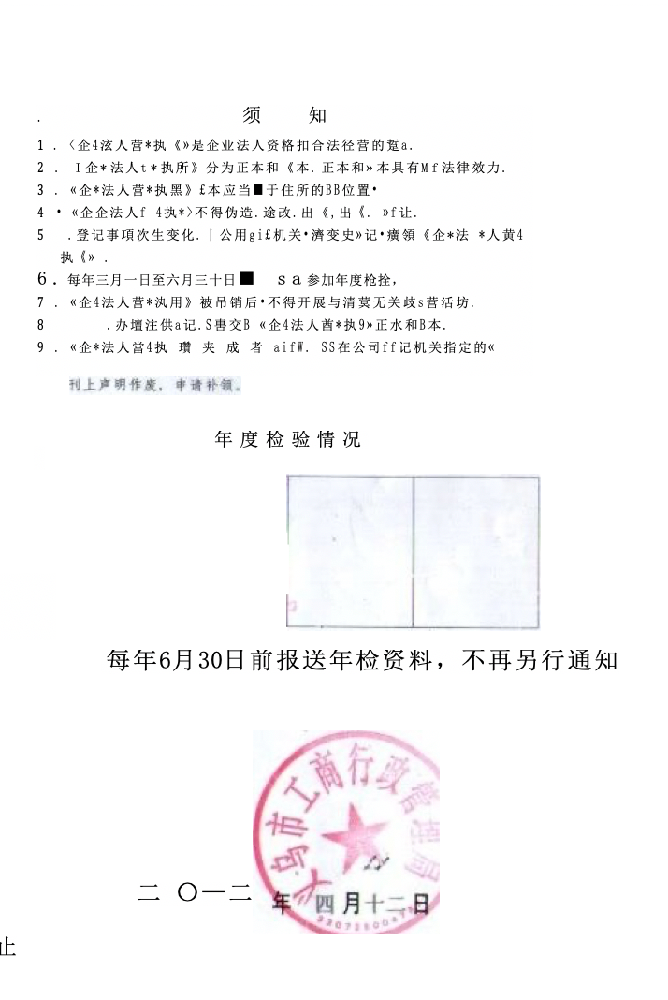

<!-- <div class="pdf-preview d-none" >
    
</div> -->
<div class="pdf-preview-empty ">
    <i class="fa fa-file-pdf-o empty-icon" *ngIf="!pdfSrc"></i>
    <span *ngIf="!pdfSrc">PREVIEW NOT AVAILABLE</span>
    <div *ngIf="!!pdfSrc">
        <pdf-viewer [src]="pdfSrc" 
        [render-text]="true" [zoom]="zoomParameter">
       
    </pdf-viewer>
    </div>

    <div id="pdfHeader" *ngIf="!!pdfHeaderSrc" class="page-header">
         
    </div>
   

    <div id="pdfFooter" *ngIf="!!pdfFooterSrc" class="page-footer">
         
    </div>

    <div id="pdfStamp" *ngIf="!!pdfStampSrc" class="page-stamp {{pdfStampClass}}">
         
    </div>
   
</div>